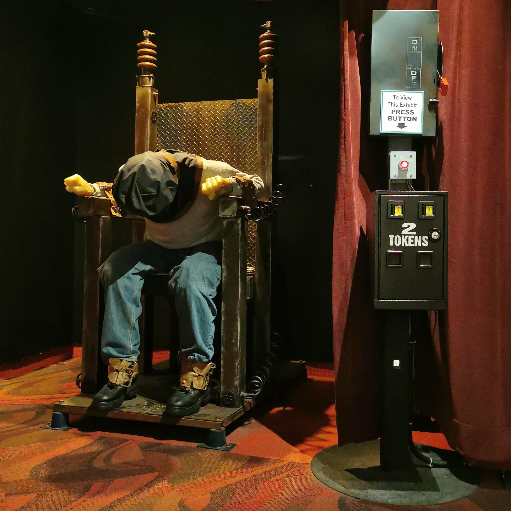

window.dataLayer = window.dataLayer || [];
function gtag(){dataLayer.push(arguments);}
gtag('js', new Date());
gtag('config', 'G-89YSPCWZ89');
Serial Killers and True Crime

Ted Bundy vs Jeffrey Dahmer
Two monsters. Two legacies of terror. One chilling comparison.
Step inside the minds of America’s most notorious serial killers — where charm masks savagery and silence hides obsession.